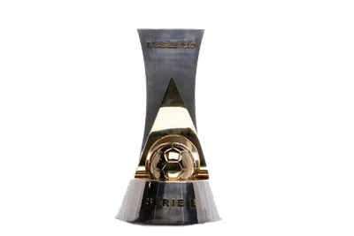
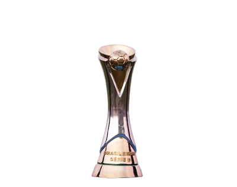

PUBLICIDADE
160×600
160×600
PUBLICIDADE
970×90
970×90
{{ compNome }}
● AO VIVO
{{ compLinha }}
JOGOS EM ANDAMENTO
8
56'
2º TEMPO
seu jogo: 1 × 1
Brasileirão Série A
1ª DIVISÃO
2 jogos
PÚBLICOCASAPLACARVISITANTEMIN
55.744

 78'
78'
78'
48.621
 63'
63'
63'

Brasileirão Série B 2ª DIVISÃO 2 jogos
PÚBLICOCASAPLACARVISITANTEMIN
40.462

 71'
71'
71'
33.494
55'
55'
 Brasileirão Série C
3ª DIVISÃO
2 jogos
Brasileirão Série C
3ª DIVISÃO
2 jogos
PÚBLICOCASAPLACARVISITANTEMIN
24.831
44'
44'
18.650
81'
81'

Brasileirão Série D 4ª DIVISÃO 2 jogos
PÚBLICOCASAPLACARVISITANTEMIN
9.718
67'
67'
7.464
59'
59'
Clique numa partida para ver os lances · o público aparece à esquerda de cada jogo
PUBLICIDADE
160×600
160×600
ESPAÇO DE PATROCÍNIO · 320×50